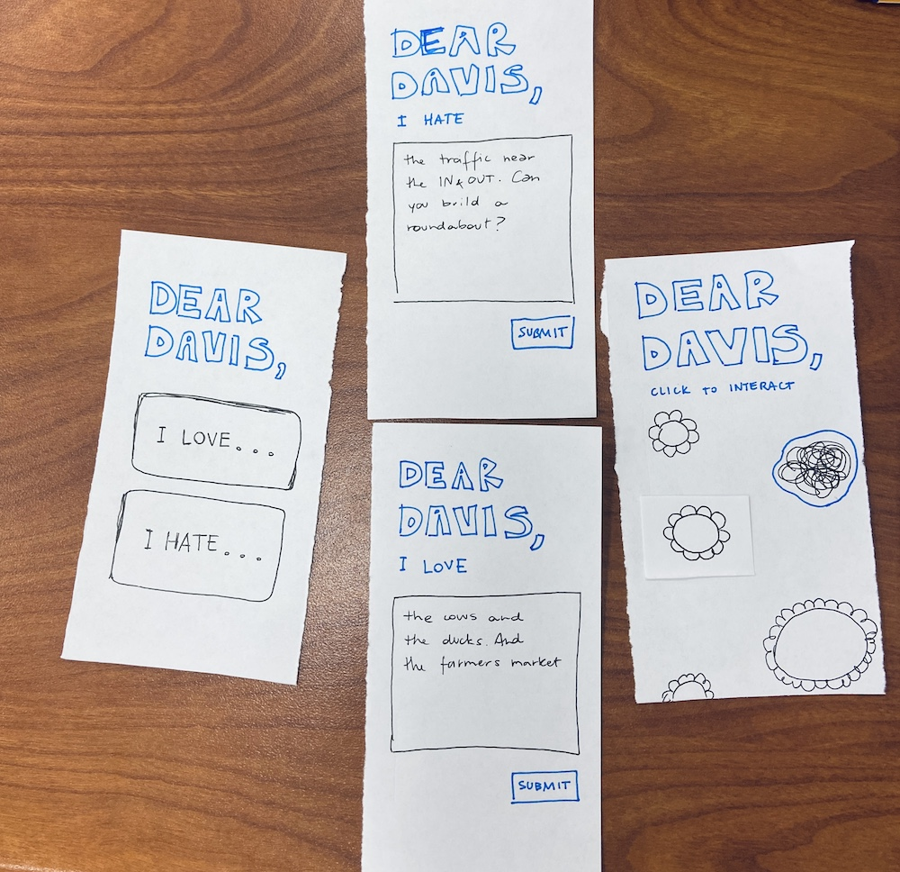

Paper Prototype
The test was fun and Kestrel interacted with my paper prototype as I hoped for. However, I noticed some adjustments that could be implemented to improve the interface like visible instructions on how to interact with the graphic elements. Kestrel also shared some great advice to improve the usability aspect like implementing an animation to highlight the users' entry.